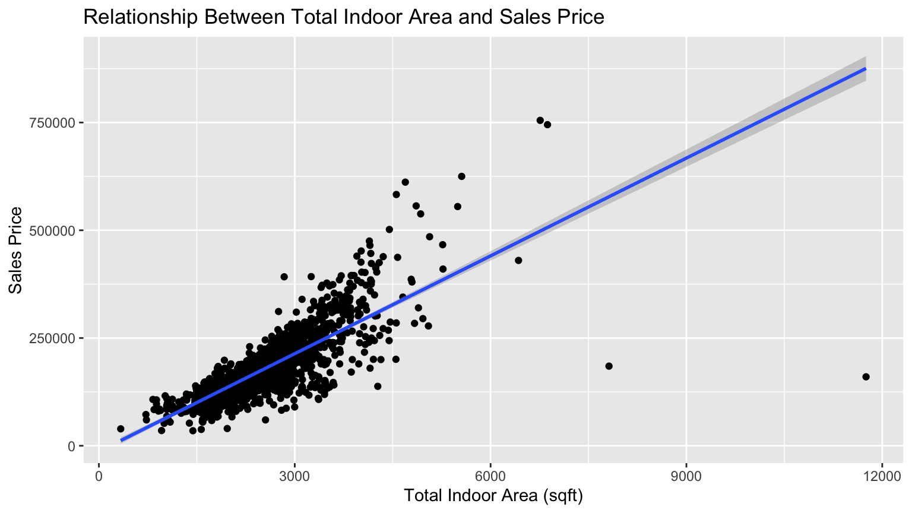
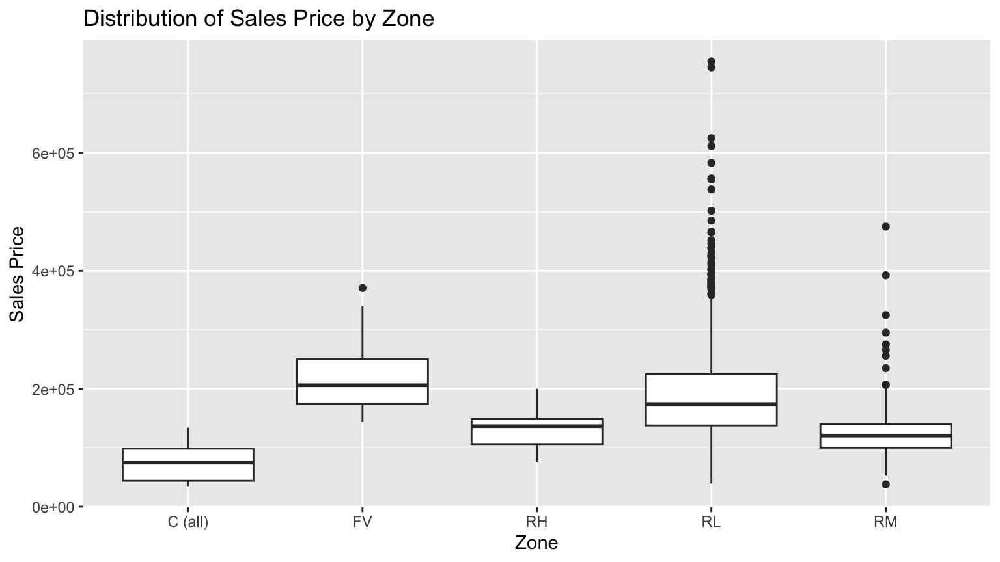
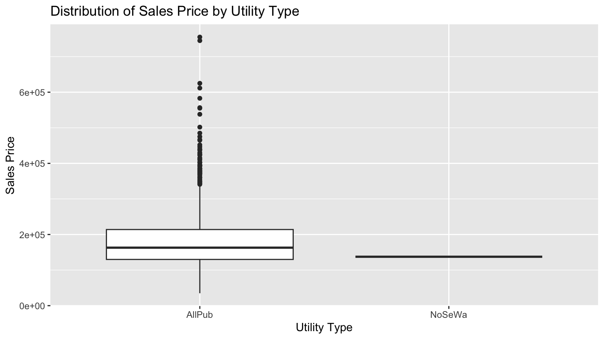
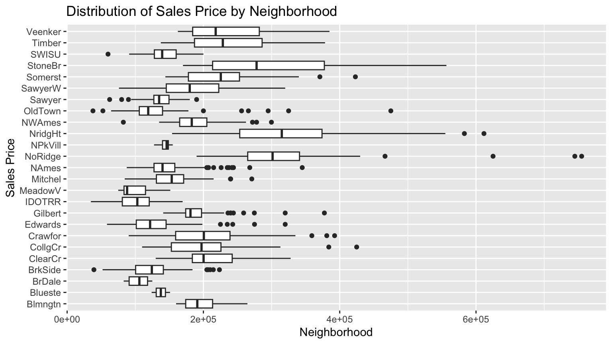
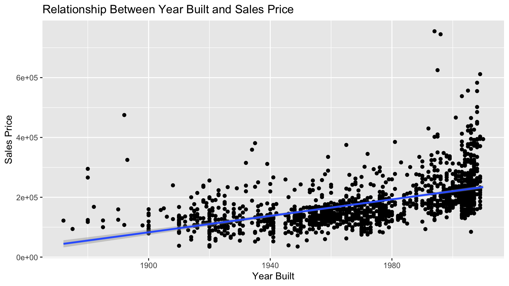
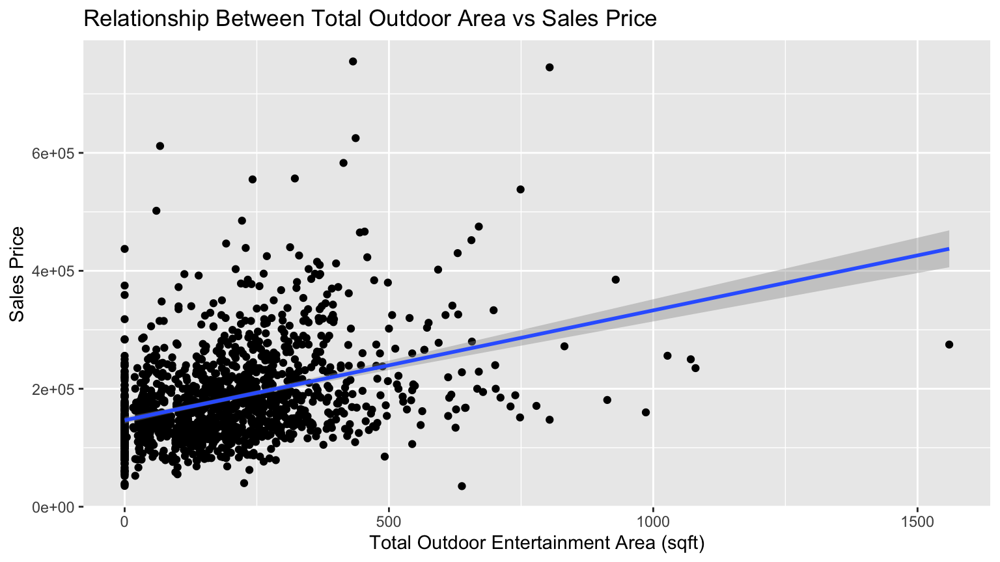

Fit a multiple regression model involving at least 6 predictor variables, with at least three categorical variables.
Justify why you chose these 6 variables and justify why you omitted others.
Apply the fitted/trained model to the training data and compute the root mean squared error using dplyr and other R functions. In other words, do not use a rmse() function from another R package.
Write a submissions.csv file that when submitted on Kaggle, returns a valid score.
Take a screenshot of your Kaggle score and compare it to the score you computed earlier.
On Moodle, submit a .zip compressed/archived file of this entire RStudio project folder. We are doing this to ensure the graders can reproduce your Quarto file.
1.1 Suggested workflow
Knit this file and read all instructions.
Before doing any modeling, perform an exploratory data analysis:
Read the data dictionary included in data/data_description.text and get familiar with all variables
Look at the raw data values in RStudio’s spreadsheet viewer
Compute summary statistics
Create data visualizations
Take the “minimally viable product” approach to model building. Remember, done is better than perfect.
1.2 Evaluation criteria
Grading will be done on a progressive scale:
Minimum viable product (passing grade)
Does your Quarto file knit? Submissions that don’t knit will be penalized harshly. So render early, render often.
Did you fit a model with one numerical predictor variable that yields a valid submission on Kaggle?
Did you include a screenshot of your Kaggle score and compared it to your estimated score
Due diligence (next highest grade). All criteria above plus:
Did you fit a model with one numerical predictor and one categorical predictor that yields a valid submission on Kaggle?
Iterating to perfection. All criteria above plus:
Did you fit a model with 3 predictor variables?
…
Did you fit a model with 6 preditor variables, at least three of which are categorical?
Point of diminishing returns (highest grade). All criteria above plus:
Is your Quarto file polished?
Don’t include superfluous output that the reader doesn’t need, doesn’t care about, or can’t digest.
All things being equal, readers prefer concise and crisp written explanations, rather than overly long ones.
Plots: Keep the “ink-to-information” ratio in mind. Ensure your plots have labeled axes and informative titles.
Use markdown formatting to make your presentation effective.
Is code cleanly written, well-documented, and well-formatted.
Optional: Did you fit a model with more than 6 predictor variables?
“Did you win?” The least important criteria. The students with the best score wins a small prize!
2 Honor Code
Indicate anybody you collaborated with:
Indicate that you did not use ChatGPT for this problem set: I did not use ChatGPT for this problem set.
3 Exploratory data analysis
3.1 Choice of variables
Justify why you chose each of your 6 predictor variables here, both in writing and using no more than 6 visualizations.
totalSF: According to the scatterplot of total square feet vs. sales price, I found the 2 variables are highly correlated and sales price increases as totalSF increases.
MSZoning: The distributions of pricing are generally different across the categories of zoning. In particular, the distributions of price for FV and RL are higher than the other 3 categories.
Utilities: The 2 categories have discernable differences in distributions of sales price. AllPub shows a wide range of sales prices, while all of the sales prices for NoSeWa are concentrated in the low sales price range.
Neighborhood: All neighborhoods possess very distinct distributions of sales prices. For example, BrkSide lies in the $150,000 price range, while StoneBr has price ranges in the $400,000 range.
YearBuilt: The 2 variables are strongly positively correlated because the sales price increases as the year built increases.
outdoorEntArea: There is a strong, positive correlation between the total outdoor entertainment area and sales price. When the total outdoor entertainment area increases, sales price increases as well.
# rename first floor area variabletraining <- training %>%rename(firstFloorSF ='1stFlrSF')# rename 2nd floor area variable training <- training %>%rename(secondFloorSF ='2ndFlrSF')# add up areas of all sections of the hometraining <- training %>%mutate(totalSF = firstFloorSF + secondFloorSF + TotalBsmtSF)# scatterplot of total sq ft vs sale priceggplot(data = training, aes(x = totalSF, y = SalePrice)) +geom_point() +geom_smooth(method ="lm") +labs(title ="Relationship Between Total Indoor Area and Sales Price",x ="Total Indoor Area (sqft)",y ="Sales Price")

# distribution of sales price by zoneggplot(data = training, aes(x = MSZoning, y = SalePrice)) +geom_boxplot() +labs(title ="Distribution of Sales Price by Zone",x ="Zone",y ="Sales Price")

# distribution of sales price by utility typeggplot(data = training, aes(x = Utilities, y = SalePrice)) +geom_boxplot() +labs(title ="Distribution of Sales Price by Utility Type",x ="Utility Type",y ="Sales Price")

# distribution of sales price by neighborhoodggplot(data = training, aes(x = SalePrice, y = Neighborhood)) +geom_boxplot() +labs(title ="Distribution of Sales Price by Neighborhood",x ="Neighborhood",y ="Sales Price")

# scatterplot of year built vs. sales priceggplot(data = training, aes(x = YearBuilt, y = SalePrice)) +geom_point() +geom_smooth(method ="lm") +labs(title ="Relationship Between Year Built and Sales Price",x ="Year Built",y ="Sales Price")

# rename three season porch area variabletraining <- training %>%rename(threeSeasonPorch ='3SsnPorch')# add up all outdoor area spaces training <- training %>%mutate(outdoorEntArea = WoodDeckSF + OpenPorchSF + EnclosedPorch + threeSeasonPorch + ScreenPorch + PoolArea)# scatterplot of outdoorEntArea vs sales price ggplot(data = training, aes(x = outdoorEntArea, y = SalePrice)) +geom_point() +geom_smooth(method ="lm") +labs(title ="Relationship Between Total Outdoor Area vs Sales Price",x ="Total Outdoor Entertainment Area (sqft)",y ="Sales Price")

3.2 Other variables considered
The following variables are excluded from the model because
Continuous variables: It does not contain a sufficient amount of data or the correlation with the sales price is relatively weaker compared to those selected.
Categorical variables: It does not contain a sufficient amount of data or the distribution of sales price across different categories are generally similar to each other.
Those variables are:
PoolArea: There is no clear correlation between pool area and sales price. There is a large cluster of points with a large range of sales prices for homes without pools. Besides that section, there is not enough data to make a conclusion on its correlation.
WoodDeckSF: Even though there is a positive correlation, the data begins to fan out as the area of the wood deck increases.
BsmtFinType1: Many of the basement finish types have similar distributions, which shows that the differences in basement finishes do not contribute to significant differences in sales price.
LotConfig: Many of the lot configurations have similar distributions, which shows that the differences in lot configurations do not contribute to significant differences in sales price.
BldgType: Although 1Fam has a significantly higher sales price than the other building types, the rest have very similar distributions. This shows that the differences in building types do not contribute to significant differences in sales price.
LotArea: A significant positive or negative relationship does not exist for this variable, as there is a large range in sales prices for houses with a smaller lot area with a few outliers for homes with larger lot areas.
4 Modeling
4.1 Model fit
Fit your ultimate multiple regression model using lm() & save it in SalePrice_model:
Apply the fitted/trained model SalePrice_model to the training data to get \(\widehat{y}\)
Compute the root mean squared error using dplyr and other R functions. In other words, do not use a rmse() function from another R package.
Ensure your score displays in the HTML output
# add predicted values to training datasettraining <-data_frame(training, y_hat =predict(SalePrice_model))# calculate rmslermsle <-sqrt((sum((log(training$y_hat +1) -log(training$SalePrice +1))^2))/(nrow(training)))
4.3 Apply fitted model on test data
Apply the fitted/trained model SalePrice_model to the test data to get \(\widehat{y}\)
# rename 1st floor area columntest <- test %>%rename(firstFloorSF ='1stFlrSF')# rename 2nd floor area columntest <- test %>%rename(secondFloorSF ='2ndFlrSF')# add up areas from first floor, second floor, and basement to get total square feettest <- test %>%mutate(totalSF = firstFloorSF + secondFloorSF + TotalBsmtSF)# rename three season porch area variabletest <- test %>%rename(threeSeasonPorch ='3SsnPorch')# add up all outdoor area spaces test <- test %>%mutate(outdoorEntArea = WoodDeckSF + OpenPorchSF + EnclosedPorch + threeSeasonPorch + ScreenPorch + PoolArea)
# predict sales price on test using fitted/trained modeltest$SalePrice <-predict(SalePrice_model, newdata = test)
# filter test to only include non NA sale price valuestest_salePrice_NA <- test %>%filter(!is.na(SalePrice))# find mean of all sales prices of testtest_salePrice_mean <-mean(test_salePrice_NA$SalePrice)# replace NA values with meantest$SalePrice[is.na(test$SalePrice)] <- test_salePrice_mean
5 Kaggle score
5.1 Create submission CSV
Below is code that writes predictions based on the mean model to a csv file:
\[
\widehat{y} = \widehat{f}(\vec{x}) = \overline{y}
\] Modify this code so that it submits your model’s predictions.
# add sales price values to submission filesubmission <- sample_submission %>%mutate(SalePrice = test$SalePrice)# convert into file write_csv(submission, path ="data/submission.csv")
5.2 Screenshot of Kaggle score
After making your submission on Kaggle, take a screenshot, and replace the image of my score with the image of yours below.
How does your RMSE based on the training data compare to the RMSE on the test data returned by Kaggle?